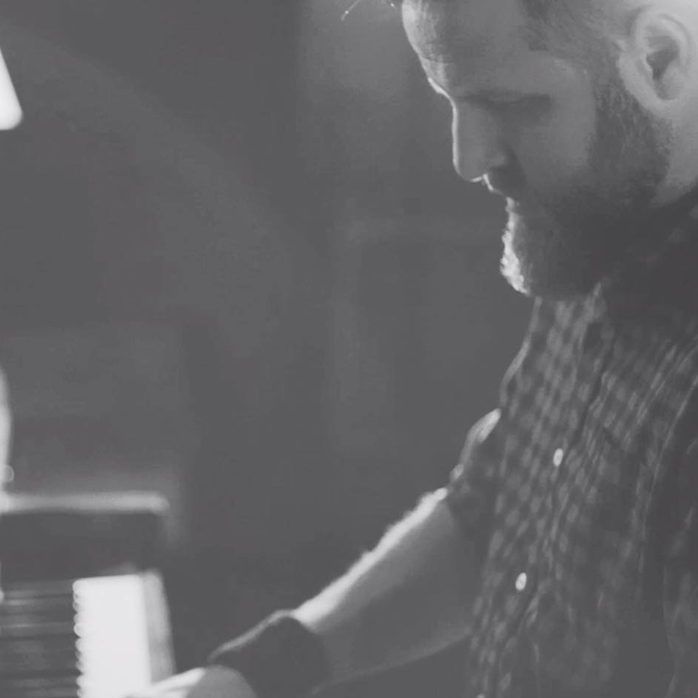

Born in the desert in Southern Utah.
In 2016, Adam debuted with his first solo album "Stille" while working as an artist. That same year, he founded his own label 80AM, and garnered good reviews by releasing various albums of crossover genre music with the sounds of piano, strings, synthesizer, and field recordings.